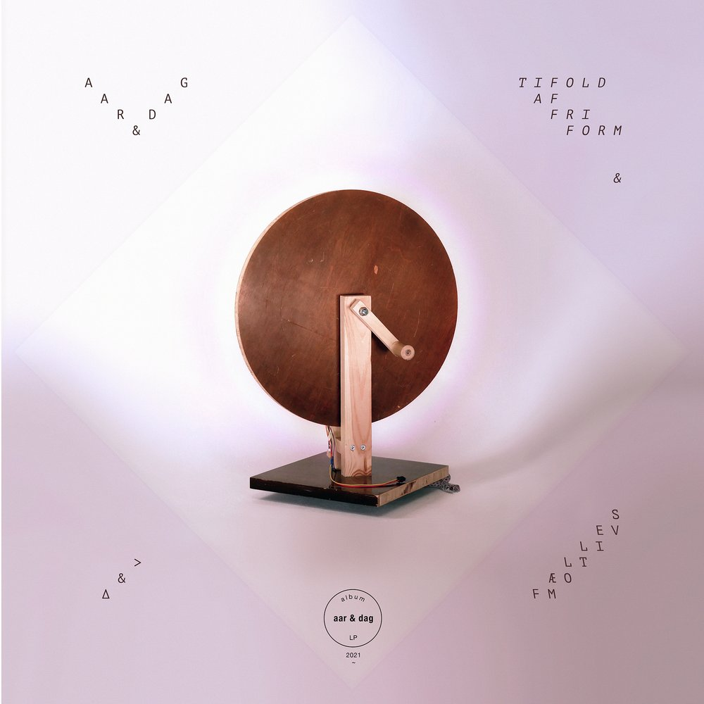

AAR & DAG - Tifold af Fri Form og Fælles Motiv · 2021
vinyl + digital released in 2021
Aar & Dag is a collective of four Danish composers: Andreas Pallisgaard,
Mads Forsby, Anders Lauge Meldgaard, and Michael Mørkholt. Each of the four
members has an independent practice as a musician/composer, working with instrument-building,
computer programming, live improvisation, and notated composition.
In bringing the four members together, Aar & Dag’s intention is to create an open field for the examination and exploration into new methods, instruments, and systems for composing and performing music as a collaborative entity. The music on the LP Tifold af Fri Form og Fælles Motiv is the product of several years of development, live performance, and studio recording, documenting Aar & Dag’s work with a large ensemble of 10 musicians that includes self-built synthesizer and electronic instruments, reeds and brass, and percussion.
The uniqueness of Aar & Dag’s sound has a great deal to do with the lack of hierarchy in their approach to composition and performance, and the collective element of Aar & Dag is essential to understanding how their music is made. Large groups have often approached the question of structure through either notation or the dynamic of the player/composer as bandleader, with the leadership taking musical form as a melodic or rhythmic figure, from which the other players either support or embellish. Rather than the composer at the top of the pyramid sending their orders downward to the players, Aar & Dag functions more like a series of ever-widening circles, where sound flows inwards and outwards, generating further commands or conditions for the players, who can then respond and reintroduce elements into the sound field.
To start simply, one could look at the object depicted in the center of the LP’s cover: a circular wooden object which the group calls a “clock wheel sequencer”. The sequencer wheel is mounted on a stand, with a crank handle and a series of small metal points attached to the wheel’s body. As the wheel is rotated, magnets placed in different positions trigger an electronic sensor on the wheel’s base, creating a pattern of sound at different pitches and speeds, with variations dictated by the hands of the musicians.
Since the whole logic of the music on Tifold af Fri Form og Fælles Motiv revolves around these self-built wooden wheels, circular form, wonky movement and uneven time flow like undercurrents throughout the LP. The nature of the wheel is adopted by and shared between the 10 musicians in their way of playing, and a shattered multi temporal time signature presents the listener with an often dense, layered and unstable experience of time, pulse and period.
As three members of Aar & Dag turn the sequencer wheels, tone patterns and rhythms are created that are fed into the organic mesh of the group. And, as with the hand driven wheel-sequenced synthesizers, each of the four percussion players play in a different time domain to one another, creating weirdly natural and yet novel and unfamiliar macro patterns together. The wind players share a group of note constellations with the synths, creating a canonic relation between the two, cross-mirroring and offset in dimensions. From this starting point, as each musician begins to respond, and thus introduce new sounds in the system, Aar & Dag begins to function like a giant feedback loop, expanding and contracting over the course of the album, like rolling, rotating waves of sound within a hand-drawn grid, vibrating in space, constantly changing and yet maintaining a tangible form.
Aar & Dag describe this approach as “the collective instrumentarium”, the idea being that this entire construction of instruments and players is, in some sense, one instrument. This is clear from the first track “CTSOPÅS” on the new LP, which drops straight into the collective sound of brass, reeds, synths, and percussion, with no clear “lead”, and no obvious center to the music. One can follow a single instrument, or the complex interweaving of each layer as it develops. At around the two minute mark, most instruments drop out, leaving a pattering percussion figure, which is then joined by a new set of patterns, tones, and rhythms by the synths and winds. Addition and subtraction of phrases or rhythms create counter-reactions among the other players, gradually altering the fabric of the music. The relation between the individual player and the ensemble is kept in a state of productive tension, each musician’s freedoms tested against the interdependence to the rest of the group.
The LP’s title is quite playful with its use of Danish, but it can be translated to mean something like “Tenfold of Free Form and Shared Motif”. The word for “motif” in Danish can also mean “motive”, and this ambiguity seems important. The contradictions in the title, between something “free” and something “shared”, between a form and a desire, seem key to the making of the music on the LP. One can tend to classify free/abstract/open music as being in some kind of opposition to the motif, the melody, or the score, but here Aar & Dag have developed a model for music-making which suspends these two compositional approaches in a kind of permanently unfolding interaction.
It hardly needs spelling out that the collective approach of the music found here on the LP has taken on new meanings and dimensions within our current moment. But even without the radical experience of isolation of the past year, the record would still be a thrill, because it’s always a thrill to hear a group of people finding a form, a sound, in real time.
Text by Jason Dungan
Musicians:
Andreas Pallisgaard – clock wheel sequencer, synthesizer
Anders Lauge Meldgaard - clock wheel sequencer, synthesizer, ewi
Michael Mørkholt - clock wheel sequencer, synthesizer
Mads Forsby – gong wheel, percussion
Oliver Laumann - percussion
Anders Vestergaard - percussion
Victor Dybbroe - percussion
Magnus Bak - trombone
Jakob Munck – trombone, sousaphone, pockettrompet
Lars Greve – Clarinets, soprano saxophone
Recorded in The Village Recording by Thomas Vang
Mixed by Anders Bach
Produced by Aar & Dag and Anders Bach
Mastered by Emil Thomsen
Composition and instrument construction by Aar & Dag
Arduino programming by Kristian Lauge Meldgaard
Distribution by State51 https://state51.com/
Contact: info(at)aarogdag.net